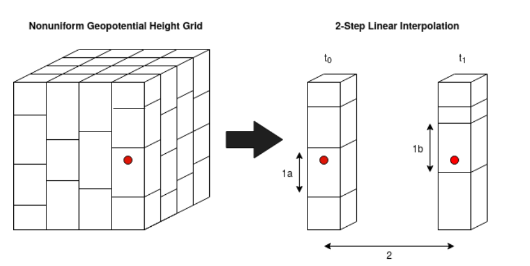

GFS
GFS extracts meteorological data from a NOAA netcdf (.nc file) data set. To speed up predicting trajectories, saveNETCDF.py should be run before main.py. This way, the large data set doesn’t need to be redownloaded each time the trajectory is run. For now, only wind velocity is used for the simulation prediction. Atmposheric properties such as temperarature and pressure are based off of the U.S. Standard Atmosphere tables from 1976, and the fluids library is used for these, which can be seen in radiation3.py
- class GFS.GFS(centered_coord)[source]
-
- closest(arr, k)[source]
Given an ordered array and a value, determines the index of the closest item contained in the array.
- fill_missing_data(data)[source]
Helper function to fill in linearly interpolate and fill in missing data
- getNearestAlt(hour_index, lat, lon, alt)[source]
Determines the nearest altitude based off of geo potential height of a .25 degree lat/lon area.
- getNewCoord(coord, dt)[source]
Determines the new coordinates every second due to wind velocity :param coord: Coordinate of balloon :type coord: dict :returns: [lat_new, lon_new, x_wind_vel, y_wind_vel, bearing, closest_lat, closest_lon, closest alt] :rtype: array
- wind_alt_Interpolate(coord)[source]
This function performs a 2-step linear interpolation to determine horizontal wind velocity at a 3d desired coordinate and timestamp.
The figure below shows a visual representation of how wind data is stored in netcdf forecasts based on lat, lon, and geopotential height. The data forms a non-uniform grid, that also changes in time. Therefore we performs a 2-step linear interpolation to determine horizontal wind velocity at a desired 3D coordinate and particular timestamp.
To start, the two nearest .25 degree lat/lon areas to the desired coordinate are looked up along with the 2 closest timestamps t0 and t1. This produces 6 arrays: u-wind, v-wind, and geopotential heights at the lower and upper closest timestamps (t0 and t1).
Next, the geopotential height is converted to altitude (m) for each timestamp. For the first interpolation, the u-v wind components at the desired altitude are determined (1a and 1b) using np.interp.
Then, once the wind speeds at matching altitudes for t0 and t1 are detemined, a second linear interpolation is performed with respect to time (t0 and t1).
- Parameters:
coord (dict) – Coordinate of balloon
- Returns:
[u_wind_vel, v_wind_vel]
- Return type:
array